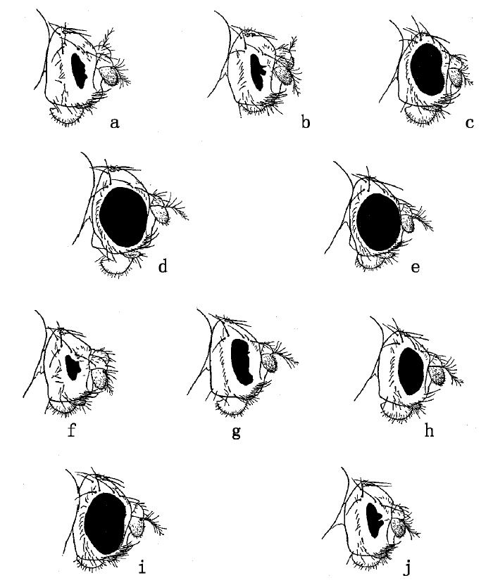
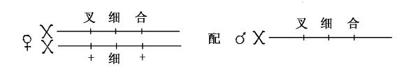
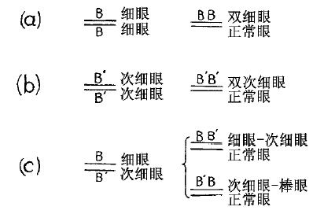
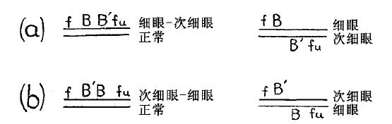

回原突变（返祖性）在解释突变过程中的重要性
如果隐性基因起源于基因的损失，则隐性纯种中势必没有再度产生原有基因的希望，否则高度特化的某物竟能无中生有，这是说不通的。另一方面，如果突变起源于基因结构内的一种变化，则突变基因有时恢复原态，似乎是不难想象的。也许我们对于基因了解得太少，以致对这样一个论证，还不能给以很高的估价；但是后一种见解，对于返祖突变体的发生，似乎解释得比较合理。关于这方面的证据，不幸还不完全满意。的确，有几个果蝇的例子，在其突变型隐性原种里，出现了具有原来性状或野生性状的个体。但是除非在控制情况下，否则这类事件还不能被认为是证据充足，因为隐性原种中沾染一个野生型个体的机会，是不可以忽视的。只有在一个突变原种具有几种突变性状作为标记，其中仅有一种性状复原，而且当时附近又没有这些突变体的其他组合的情形下，这种回原变化才能提供注意的证据。在我们培养的原种里，有少数记录的例子，满足了上述条件，就证据所能涉及的范围来说，也表明了回原现象可以发生。也须提防另一种可能性。有一些突变原种，经过若干时间以后，似乎或多或少的失去了该原种的特征，但在杂交以后，却又完全恢复了那个突变性状。例如第四染色体上的弯翅性状（图30），原来变化不定，并且容易接受外界影响，如果不加选择，外貌上即有重返野生型的趋势。这种外貌上返祖的果蝇如果同野生型杂交，所得子代再进行自交，则在所预期的弯翅一类的孙代中，会有许多个体显出弯翅性状。在另一种称为楯片的突变原种里，也发现了同样的结果。楯片原种的特征是：胸部缺少某些刚毛。在某些楯片原种里，出现了一些具有这种“失去”了的刚毛的个体。表面上，这种突变体似乎回到野生型，但如果让这种果蝇同野生型原种交配，却证明并没有这回事。在杂交二代中，楯片果蝇重复出现。研究这个例子，证明楯片之所以还原为正常性状，是由于出现了一个隐性基因，该隐性基因在楯片原种的纯合状态下，促使所失去的刚毛再度发育。除了这个结果对正在讨论中的问题有关系以外，一个新隐性突变使原有突变性状回到原型，这件事本身也是一个饶有兴趣的重大事件。
最后，还有细眼还原为正常眼的奇异现象。细眼［图49a、b］为显性或半显性性状。若干年来，根据May和Zeleny二人的观察，已知细眼可以还原为正常眼，并且有人引用它作为回原突变的证据。回原突变的频率随不同的原种而异，估计每1600次中约发生1次。以后，Sturtevant和摩尔根发现，当细眼回原时，细眼基因的附近便发生交换。Sturtevant在判明所发生的变化的性质方面已经取得了决定性的证据。

图49 果蝇细眼的各种类型：a.纯合的细眼雌蝇；b.细眼雄蝇；c.细眼对圆眼的雌蝇；
d.由回原作用得来的纯合圆眼雌蝇；e.由回原作用得来的雄蝇，含有一个圆眼基因；
f.双细眼雄蝇；g.纯合的次细雌蝇；h.次细眼的雄蝇；i.次细眼对圆眼的雌蝇；j.双次细眼的雌蝇
证实每次回原都有交换作用的方法如下：有一个称为叉毛的基因，紧贴在细眼基因的左侧（1/5单位）；另一个称为合脉的基因，位于细眼右侧的附近（2.5单位）。一只雌蝇有下列组合：一条X染色体上含上述三个基因，细眼位于叉毛与合脉之间，另一条X染色体上除含细眼外还有叉毛、合脉两者的野生型等位基因（图50）。这只雌蝇同叉毛、细眼、合脉的雄蝇交配，其子代的普通雄蝇从母方接受一条含叉毛、细眼、合脉的X染色体，或者接受另一条含非叉毛、细眼、非合脉的X染色体，所以表现出的性状或者是叉毛、细眼、合脉三者，或者只是细眼。当回原突变发生时（很少发生），即当一只圆眼雌蝇出现时，可以看到在叉毛和合脉之间发生了交换。例如，回原的雄蝇或者具有合脉，或者表现叉毛，但从来没有兼具合脉、叉毛或者兼具非叉毛、非合脉的。所以在母体染色体上，叉毛和合脉之间一定发生过交换。总计叉毛与合脉间的交换，不到百分之三，但已经包括所有回原突变在内。

图50 一只细眼雌蝇在叉毛和合脉上为杂合子。该雌蝇与一只叉毛、细眼、合脉的雄蝇杂交［“+”代表野生型基因——译者注］
为了简化情节起见，上文仅提出回原型雄蝇。当然，回原型染色体也可以窜入一个卵子内，发育成为雌蝇。我们可以设计这样的一项实验，以便在回原型雌蝇体内探求交换作用的证据。子代普通雌蝇尽是纯合的细眼［图49a］。子代回原型雌蝇则为杂合的细眼，或者加上叉毛，或者加上合脉，没有一只是兼有叉毛和合脉的，也没有一只是兼有非叉毛和非合脉的。
引起还原为圆眼的这种交换作用，一定不只是使一条X染色体失去一个细眼基因，而且也必然会把这个基因移放在另一条细眼染色体之上［图51（a）］。含两个细眼基因（双细眼）的雄蝇，同含一个细眼基因的雄蝇，外形上相似，不过前者的眼比较小，小眼的数目也比较少。这型称为双细眼［图51（b）］。同一直线序列上有两个等位基因，这是在任何其他突变中从未见过的非常事件。我们可以这样去描画：即只有设想在交换前原来是对立的两个细眼基因，在进行交换时却稍微移动了一下位置，结果，双细染色体上至少延长了一个细眼基因，反之，另一条染色体上却随着一个细眼基因的缺失而相应缩短了。

图51 示细眼、次细眼与细眼次细眼三者的突变［B代表细眼基因，B′代表次细眼基因——译者注］
Sturtevant对于回原理论进行过一些决定性测验。细眼的一个等位基因（由细眼突变而出），名为次细眼［图49g、h］，在两眼的大小和小眼的数目上都同细眼型略有差异。次细眼原种内也发生回原现象［图51（b）］，产生同野生型极相类似的完全圆眼型以及一个称为双次细眼的新型［图49j］。
一只雌蝇在一条染色体上有细眼基因，在另一条染色体上有次细基因［图51（c）］。当回原变化发生时，该雌蝇将产生完全圆眼型以及细眼次细眼型或次细眼细眼型［图51（c）］。
Sturtevant也利用了细眼次细眼型和次细眼细眼型，来证实下列事实：如图所示，如果突变基因都位于同一染色体之上，则当细眼次细眼与正常型之间发生交换时［图52（a）］结果会产生叉毛细眼型或次细眼合脉型；如果交换发生在次细眼细眼型与正常型之间［图52（b）］则结果或为叉毛次细眼，或为细眼合脉。

图52 a.示叉毛-细眼与次细眼-合脉之间的突变；b.示叉毛-次细眼与细眼-合脉之间的突变［f代表叉毛基因，fu代表合脉基因，B代表细眼基因，B′代表次细眼基因。——译者注］
由此可见，两型中的各个基因不仅保存各该基因的特性，而且也维持基因互相间的顺序。从fBB′fu和fB′Bfu的构成方式，可以知道这些基因之间的顺序。事实上，在所有的例子里，B与B′之间的断裂，都同原先决定了的顺序相符合。
这些结果，对于细眼由于交换而回原一说提供了有利的决定性证据。目前，这是独一无二的例子。似乎在X染色体上的细眼基因点上有某种特殊情况，能使等位基因之间发生交换。Sturtevant把这种交换称为不等交换（注：这些关系，涉及与细眼基因点有关的几个奇怪的问题。例如，细眼交换时，在细眼基因点上究竟留下了什么？是细眼基因缺失了吗？原来的细眼基因是由于野生型的基因突变而生，或者有另一个新基因的生成呢？这些问题仍在研究中。）。
上述结果提出另一问题：即一切突变是否都由交换所致？在果蝇里，显然证明了交换作用不能普遍解释一切突变的由来，因为我们熟悉，雌雄果蝇都可以发生突变，而雄蝇却没有交换作用。